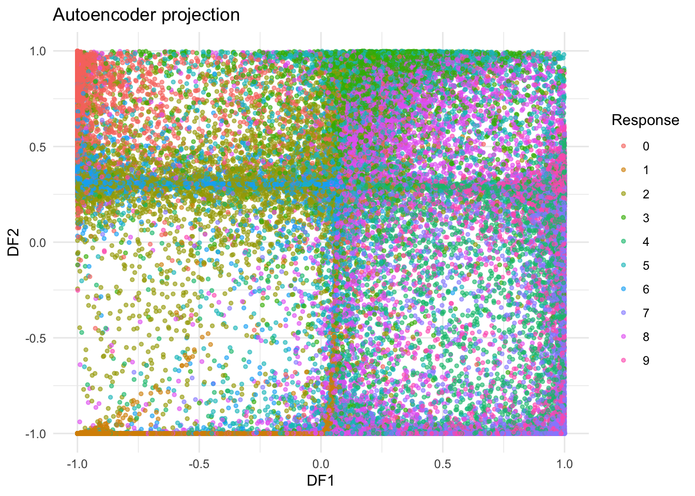

6.4 Autoencoders (AEs)
6.4.1 Introduction
Autoencoders, which originated from the domain of neural network research, represent a class of unsupervised deep learning models. At its core, autoencoders seek to learn a compressed, efficient representation of input data by leveraging a network structure that nonlinearly encodes the data into a lower dimension space and subsequently decodes it to reconstruct the original data. [16]
The typical architecture of an autoencoder comprises three main components:
Encoder: A function \(f(\vec{x})\) that compresses the input \(\vec{x}\) into a latent representation.
Latent Space: The reduced dimensionality representation, often denoted as \(\vec{z}\), where \(\vec{z} = f(\vec{x})\).
Decoder: A function \(g(\vec{z})\) that aims to reconstruct the original input from the latent representation.
The primary objective during the training phase of an autoencoder is to minimize the reconstruction error, often quantified using metrics such as Mean Squared Error (MSE) between the input data and its reconstructed counterpart. The minimization forces the model to capture salient features of the data in the latent space, thereby enabling efficient data compression, noise reduction, and feature extraction.
The utility of Autoencoders has been demonstrated in a wide array of applications, from dimensionality reduction, anomaly detection, denoising, to more complex tasks such as generating new data instances. Variations and extensions of the basic Autoencoder model, including Variational Autoencoders (VAEs) [17] and Denoising Autoencoders [18], have further broadened their applicability by introducing probabilistic interpretations and noise robustness, respectively.
In the broader context of machine learning and artificial intelligence, Autoencoders exemplify the power of unsupervised learning paradigms, emphasizing the capability of neural networks to derive meaningful representations from data without explicit labeling.
6.4.2 Algorithm
6.4.2.1 Notations
Input - Dataset \(X = \{\vec{x}_1, \vec{x}_2, \dots \vec{x}_n\}\) where \(\vec{x}_i\) is a vectorized representation of each data sample. - Encoder neural network \(E\) with parameters \(\theta_e\) mapping inputs to latent space. - Decoder neural network \(D\) with parameters \(\theta_d\) mapping latent space back to the original space. - Reconstruction loss function \(L\), e.g., Mean Squared Error (MSE).
Output: - Optimized parameters \(\theta_e^*\) for \(E\) and \(\theta_d^*\) for \(D\).
6.4.2.2 Steps Breakdown
- Initialization:
- Initialize encoder \(E\) and decoder \(D\) neural network weights using techniques like Xavier or He initialization to ensure weight variance remains controlled during training.
- Forward Propagation:
For each data sample \(\vec{x}_i\):
- Use encoder \(E\) to transform \(\vec{x}_i\) to latent space: \[ \vec{z}_i = E_{\theta_e}(\vec{x}_i) \]
- Use decoder \(D\) to reconstruct \(\vec{x}_i\) from \(\vec{z}_i\): \[ \vec{x}^{\prime}_i = D_{\theta_d}(\vec{z}_i) \]
- Loss Computation:
- Calculate reconstruction loss for the given sample using \(L\): \[ L_i = L(\vec{x}_i, \vec{x}^{\prime}_i) \]
- Compute average loss for the batch: \[ L_{batch} = \frac{1}{N} \sum_{i=1}^{N} L_i \] where \(N\) is the batch size.
- Backward Propagation:
- Compute the gradient of \(L_{batch}\) with respect to encoder and decoder parameters using back-propagation.
- Use gradient descent (or its variants) to update both \(\theta_e\) and \(\theta_d\): \[ \theta_e = \theta_e - \alpha \frac{\partial L_{batch}}{\partial \theta_e} \] \[ \theta_d = \theta_d - \alpha \frac{\partial L_{batch}}{\partial \theta_d} \] where \(\alpha\) is the learning rate.
- Training Loop:
- Execute steps 2-4 for multiple iterations (epochs) over the entire data set. Regularly shuffle the data set before each epoch to ensure IID (independent and identically distributed) property.
- Model Retrieval:
- Once convergence is achieved, i.e., when the reduction in \(L_{batch}\) between subsequent epochs is negligible or after a pre-defined number of epochs, extract the optimized parameters \(\theta_e^*\) and \(\theta_d^*\). These define the trained Autoencoder.
- Optional Fine-tuning:
- For better performance, further fine-tune the trained Autoencoder using techniques like early stopping based on validation loss, or introduce regularization techniques like dropout to prevent overfitting.
6.4.3 Example
Compared to other manifold learning methods we have introduced (ISOMAP and LLE), the implementation and parameter tuning of Autoencoders is much more complicated. We’ll explore how to implement an autoencoder in R using the Keras library with the famous MNIST dataset. As a Neuro Network method, Autoencoders have a number of parameters, thus requiring a large dataset to train. This explains why we choose MNIST dataset here.
- Load and Preprocess the Data
The above code loads the MNIST dataset from keras package. mnist variable is divided into a training set and a test set, both containing the image information and label information. Since we are using Autoencoders to conduct dimensio reduction here (unsupervised learning), we only require the image information from the traing set. The train_images contains the images from the training set.
# Flatten and normalize the images
train_images <- array_reshape(train_images, c(nrow(train_images), 28*28))
train_images <- train_images / 255For an Autoencoder to process these images, they need to be reshaped into a flat vector. This step reshapes each 28x28 image into a vector of length 784. Furthermore, to facilitate the neural network’s training, the pixel values (originally between 0 to 255) are normalized to fall between 0 and 1.
- Build the Autoencoders
The autoencoder comprises two main parts: Encoder and Decoder, as we have stated before.
# initiates the input layer for the autoencoder which expects input vectors of length 784
input_img <- layer_input(shape = c(28*28))
# Encoder
encoded <- input_img %>%
layer_dense(units = 128, activation = "relu") %>%
layer_dropout(rate=0.8) %>%
layer_dense(units = 2, activation = "tanh")The Encoder starts with the input image and passes it through a dense layer with 128 neurons and ReLU activation. A dropout layer is added for regularization, reducing the risk of over-fitting. The last layer of the Encoder further compresses the data into a 2D representation.
Dropout Layer In the context of Keras, layer_dropout(rate=0.8) adds a dropout layer where there’s an 80% chance that any given neuron in the previous layer will be turned off during training for a particular update.
In practice, it means that during training step, for each training iteration, \(80\%\) of the neurons of the preceding layer will be randomly selected and turned off. These turned-off neurons won’t have any influence on the computation for that specific iteration. Dropout is only active during training, during testing step, all neurons will be active, and dropout won’t be applied.
This step is super important, if dropout layer is not introduced, the model will be largely over-fitted. You may try this yourself.
Activation Function
Activation functions play a vital role in neural networks, determining the output of a neuron based on its input. They introduce non-linear properties into the network, enabling it to learn from the error and make adjustments, which is essential for learning complex patterns.
There are several common activation functions we can choose from.
- Sigmoid (Logistic) Function:
Equation: \(f(x) = \frac{1}{1 + e^{-x}}\)
Range: Between 0 and 1
Pros: Smooth gradient, preventing “jumps” in output values
Cons: Can cause vanishing gradient problems in deep networks
- Hyperbolic Tangent (tanh) Function:
Equation: \(f(x) = \frac{e^x - e^{-x}}{e^x + e^{-x}}\)
Range: Between -1 and 1
Pros: Zero-centered, making it easier for the model to generalize
Cons: Like the sigmoid, it can also lead to vanishing gradient issues
- Rectified Linear Unit (ReLU) Function:
Equation: \(f(x) = max(0, x)\)
Range: From 0 to infinity
Pros: Helps mitigate the vanishing gradient problem, leading to faster convergence
Cons: Neurons can sometimes “die”, especially with a large learning rate
- Softmax Function:
Equation: \(\sigma(z)_j = \frac{e^{z_j}}{\sum_{k=1}^{K} e^{z_k}}\) for \(j = 1, ..., K\)
Used primarily in the output layer of a classifier, where it turns logits into probabilities by distributing them over several classes
Range: Between 0 to 1
Each activation function has its unique characteristics and is suitable for different kinds of tasks. The choice of an activation function depends on the specific problem at hand, the nature of the data, and the architecture of the neural network.
# Decoder
decoded <- encoded %>%
layer_dense(units = 128, activation = "relu") %>%
layer_dropout(rate=0.8) %>%
layer_dense(units = 28*28, activation = "tanh")
# combines the encoder and decoder into the Autoencoder model
autoencoder <- keras_model(input = input_img, output = decoded)The Decoder takes the encoded 2D representation and attempts to reconstruct the original image. It uses a dense layer with 128 neurons followed by another dropout layer. The final dense layer outputs vectors of length \(784 \, (28 \times 28)\), matching the original image’s shape.
- Compile and Train Autoencoders
Before training, the model needs to be compiled. The ‘adam’ optimizer and the ‘mean_squared_error’ loss function are chosen for this task. You may choose different loss functions according to your specific data type and objective, here MSE might be the most suitable.
## Model: "model"
## ______________________________________________________________________________________________________________________________________________________________________________
## Layer (type) Output Shape Param #
## ==============================================================================================================================================================================
## input_1 (InputLayer) [(None, 784)] 0
## dense_1 (Dense) (None, 128) 100480
## dropout (Dropout) (None, 128) 0
## dense (Dense) (None, 2) 258
## dense_3 (Dense) (None, 128) 384
## dropout_1 (Dropout) (None, 128) 0
## dense_2 (Dense) (None, 784) 101136
## ==============================================================================================================================================================================
## Total params: 202,258
## Trainable params: 202,258
## Non-trainable params: 0
## ______________________________________________________________________________________________________________________________________________________________________________The Autoencoder is trained using the training images as both inputs and targets. This is because the Autoencoder’s goal is to reconstruct its input as closely as possible.
history <- autoencoder %>% fit(
train_images, train_images,
epochs = 40,
batch_size = 256,
shuffle = TRUE,
validation_split = 0.2,
getOption("keras.fit_verbose", default = 0)
)
plot(history)
- Visualize the Encoded Representations
To visualize the 2D representations learned by the Encoder, a separate Encoder model is created. This model shares its weights with the Autoencoders’ Encoder portion. It’s then used to predict or transform the training images into their 2D encoded form.
encoder <- keras_model(inputs = input_img, outputs = encoded)
encoded_images <- predict(encoder, train_images)## 1875/1875 - 1s - 600ms/epoch - 320us/step# Convert to a data frame for easier viewing
encoded_df <- as.data.frame(encoded_images)
head(encoded_df)## V1 V2
## 1 0.784608781 0.2318616
## 2 0.958282411 0.9580116
## 3 -0.375284046 0.6486747
## 4 0.003874707 -0.9999937
## 5 -0.999934554 0.3062524
## 6 0.099140599 0.8832416Using the ggplot2 package, the #D encoded images are visualized, color-coded by their true labels. This visualization can provide insights into how well the encoder has learned to cluster different digits in this reduced-dimensional space. We also compare the result of AutoEncoder with that of PCA, as shown below.
library(ggplot2)
library(plotly)
labels_train <- mnist$train$y
labels_train <- as.factor(labels_train)
# Plotting the data
ae <- ggplot(encoded_df, aes(x = V1, y = V2, color = labels_train)) +
geom_point(alpha = 0.6, size = 1) +
labs(title = "Autoencoder projection",
x = "DF1",
y = "DF2",
color = "Response") +
theme_minimal()
# plotting 3d results
# ae3 <- plot_ly(encoded_df, x=~V1, y=~V2, z =~V3,
# color = labels_train,
# size = 0.1)pca_result <- prcomp(train_images)
# Extract the scores of the first two principal components
scores <- as.data.frame(pca_result$x[, 1:2])
colnames(scores) <- c("PC1", "PC2")
p <- ggplot(scores, aes(x = PC1, y = PC2, color = labels_train)) +
geom_point(alpha = 0.6) +
labs(title = "PCA", x = "PC1", y = "PC2", color="response") +
theme_minimal()
# # 3D
# scores <- as.data.frame(pca_result$x[, 1:3])
# colnames(scores) <- c("PC1", "PC2", "PC3")
# p3 <- plot_ly(scores, x = ~PC1, y =~PC2, z=~PC3,
# color = labels_train,
# size = 0.1)

Alternative Choices for the use of R packages for Autoencoders
Besides package keras we have used as an example, h2o package is also a popular package for implementing Autoencoders. Unlike h2o package has an automated machine learning (AutoML) feature, making it easy for users to train and compare multiple models. In addition, it requires less manual tuning and configuration for deep learning, making it more accessible for beginners or those not primarily focused on deep learning. You may have a try yourself if you are interested after class. https://cran.r-project.org/web/packages/h2o/index.html (Keep in mind that h2o is Java-based, so having Java installed is a prerequisite of using h2o package)
We choose keras here because it allows the development of custom layers, loss functions, and metrics, enabling you to have a clearer understanding of the mechanism and implementation of Autoencoders.